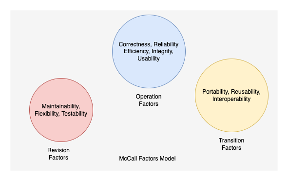

After reviewing the article by McCall, Richards & Walters (1977), the article introduced the factor model for evaluating software quality. Figure 1 depicts the factor model defined as 11 factors and categorized into three groups. The blue circle contains those Items used for assessing the software itself, such as the software whether it fulfils the user requirements and expectations or not. The yellow circle has those items used for measuring the software's modularity, such as whether it can be reused in other applications or not. Finally, the red circle contains those items used for determining the maintainability of the software itself, such as the time spent figuring out the software's issues, how long it will take, etc. The authors applied this factors model for evaluating the software quality of the Air Force System.
The selected article by Greg G. & Diane K. (2014) surveyed software quality for in-house software with 419 Canadian medical physicists. After that, they analysed the survey from respondents. Then, they shared and discussed the result with these categories: software integrity, training & documentation, testing practices, etc. Finally, they provided suggestions for the in-house software.
There are a few differences between the two articles on measuring the software quality of the system. First, the selected article (Greg G. & Diane K. 2014) didn’t evaluate much on the transition factors. For example, it didn’t explore the portability, reusability, and interoperability while surveying because the target group was the medical practitioners rather than the in-house software authors. Conversely, another article (McCall, Richards & Walters, 1977) examined the operational history of the Air Force system in the portability aspects. If the operational history recorded any in the portability aspects, it means the software has a bad quality in this aspect.
To sum up, evaluating the software quality for systems depends on the scale, size, and mission-critical areas. For example, the in-house software doesn’t harm anybody if an issue is found. But conversely, the Air Force system can take many lives if there is a critical error. As a result, I think the selected article still serves the purpose, and the extent of the evaluation report is sufficient.